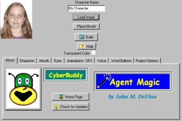

Build your first
character in minutes.
Whether you build
characters for profit,
for fun, or for gifts,
this is the tool you've
been looking for.

|
How can I make my own characters?
Unil now that had a complicated answer. Now there is the CyberBuddy Character Builder. Build a Character from most any image in less than 1 minute!
Really!
| 
|
The CyberBuddy Agent Character Builder is a tool that will allow you to create an animated agent character from a single image. The image can be from a photo or drawing or from an image downloaded from the web.
You can build a character with just the following steps:
Load an image. Just browse for the image in your computer.
Place the mouth cursor. Place the cursor where mouth movements will be constructed by the program.
Click the build button.
Thats it! Your new character with hundreds of animation frames is created in a matter of moments.
|
Want to add some sound effects? Change the voice properties of the character? Change the character size?
That's easy too.
Make characters from Clipart, downloaded images, photos of the kids, grand-kids.
Make a character from your child's favorite cartoon character. The possibilities are endless.
Are you an experienced Agent Builder?
The CyberBuddy Character Builder can be used to start the character creation process for you and save many hours of work.
You'll be able to start development with a pre-created Agent Character Editor Source file, Icon and hundreds of images.
Features
Also, check out the additional features in Version 2 of the CyberBuddy Character Builder.
|
|